New project · 03
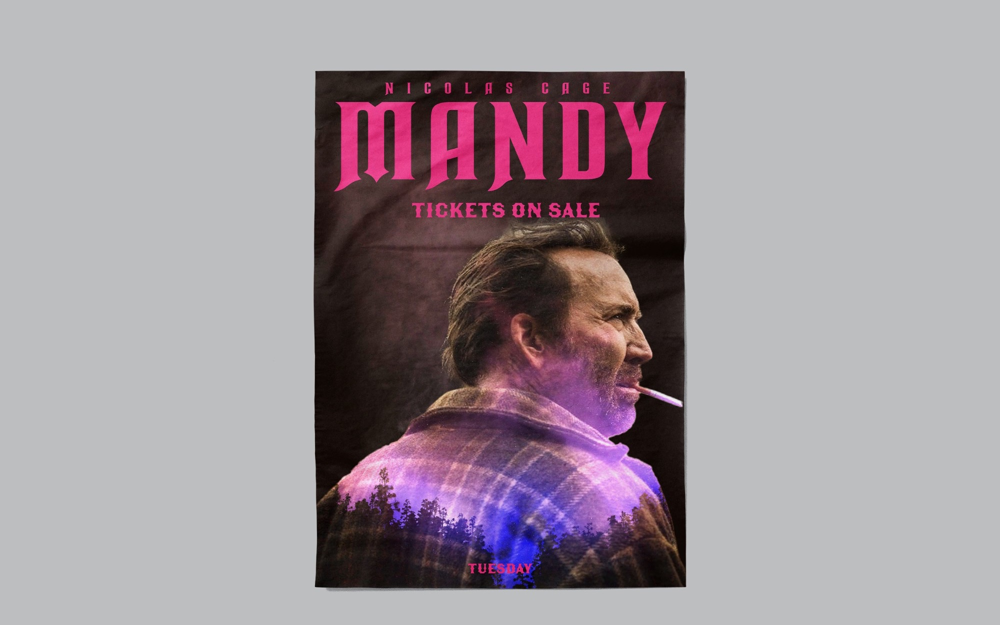
Film poster — Mandy
Graphic Design · Poster
@shiran_designer
Link in bio
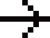
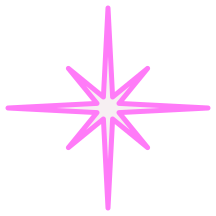
השפה של המותג s.design: מי הוא, איך הוא נראה, איך הוא מדבר, ואיך מתרגמים אותו לסושיאל. כל מה שכאן נגזר מהאתר. המפרט הטכני של הרכיבים נמצא ב-Design System.
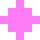
01 / EssenceRetro pixel UI עם לב עכשווי. דיגיטלי, חדשני ושובב, עם קריצה ואהבה לממשקים של פעם.
המותג הוא שירן: מעצבת UX/UI שמגיעה מקולנוע, עיצוב סטים, צילום אנלוגי ויצירה ביד. המסך הוא לוח משחק, המבקר הוא שחקן, וכל פרויקט הוא שלב. האתר לא רק מציג עבודות, הוא מזמין לשחק: ללחוץ, לאסוף, לגלות.
שובבות עם כוונה: משחק איסוף, דמות שמפהקת, צליל קליק עדין. הנאה שמשרתת את המוצר, לא קישוט.
כל אלמנט בנוי על גריד פיקסלים: פינות ישרות, מסגרות 2px, צללים שזזים בצעדים. דיוק של מעצבת.
מתחת למסך יש נייר, פילם וגרעיניות: קולאז', פולארויד, מדבקות. העולם האישי של שירן נכנס לממשק.
UX/UI Designer
כותרת ה-hero (v1.18, 2026-11-10; החליפה את Pixeling joy into products). פשוטה וברורה: התפקיד, בשתי שורות UX/UI / Designer, "UX/UI" בצבע הטקסט ו-"Designer" בוורוד מלא. מעליה eyebrow "Hi, I'm Shiran", ומתחתיה תת-הכותרת שאומרת איך היא חושבת. הקודם: Pixeling joy / into products02 / Logo
ה-S המקורית של שירן עם החתך והנקודה, ו-"design" ב-Unbounded 800 עם ניצוץ ורוד במקום הנקודה של ה-i. הנקודה של ה-S והניצוץ תמיד ורודים #FF7BF8, לא בסגול של הלוגו הישן. הקבצים הם paths וקטוריים, בלי פונט: brand/final/.
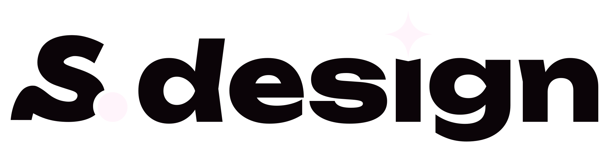
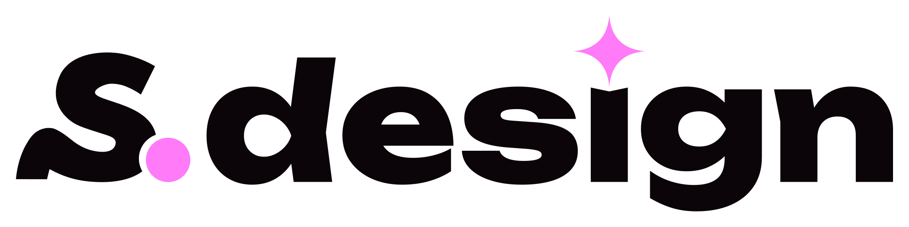
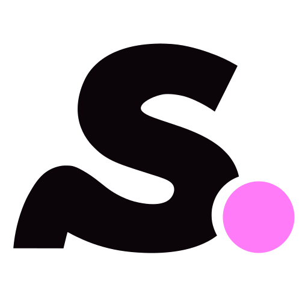
מינימום
לוגו מלא: גובה 24px במסך / 12 מ"מ בדפוס. מתחת לזה: רק האייקון (מינימום 16px).
באתר: 30px בניווט, 26px במובייל, עם glow ורוד עדין.
סביב הלוגו נשאר מרווח ריק ששווה לפחות לגובה ה-S חלקי 2. שום טקסט, אייקון או קצה של תמונה לא נכנס לשם.
לא למתוח או לעוות
לא לשנות צבע (גם לא לסגול הישן)
לא על תמונה עמוסה בלי שכבה כהה
לא להטות ולא להוסיף צל צבעוני
03 / Colour
פלטה מונוכרומטית: לילה כמעט שחור וורוד ניאון אחד, עם גוונים שנגזרים ממנו. הצבעים החמים של הקולאז' (נייר, קראפט, ענבר) והצהוב של המשחק הם אקסנטים בלבד.
Night
#0B0408 · --bg
רקע של הכל.
Neon pink
#FF7BF8 · --pink
הצבע של המותג: כותרות, כפתור ראשי, glow, הנקודה של ה-S.
Blush
#F7C4EE · --text
טקסט רץ על הלילה.
Mauve
#B07AA5 · --muted
מטא, תוויות, מספרים.
Soft
#FFC4FC · --pink-soft
טקסט lead, chips, הדגשות רכות.
Hover
#FFA3FA · --pink-hover
מילוי של כפתור ראשי ב-hover.
Dim
#93408F · --pink-dim
הצל ה-offset של כפתורים ו-chips.
Deep
#3B1440 · --pink-deep
צל של חלונות, "דיו" על נייר.
Paper
#F6EFF2 · --paper
קולאז': מסגרת פולארויד, קו גזירה של מדבקה.
Kraft
#F2D7A0 · --kraft
קולאז': תווית מדבקה.
Amber
#E8A33A · --amber
קולאז': קוד בשוליים של פילם.
Coin
#FFE15C · --yellow
רק תגמולים במשחק: "+1", achievement.
הלילה הוא הבמה, הוורוד הוא האור. אם פוסט מרגיש "ורוד מדי", זה סימן שחסר לו לילה. לרקע ורוד מלא משתמשים רק כרגע מודגש (שקופית אחת בקרוסלה, כפתור).
--pink-dim ו---pink-deep הם לצללים ולקישוט בלבד, לא לטקסט (ניגודיות נמוכה מדי).
04 / Type
ארבעה פונטים חינמיים מ-Google Fonts, לכל אחד תפקיד אחד. לא מערבבים תפקידים. כל הכותרות באותיות גדולות.
עברית (לסושיאל בעברית): Heebo לטקסט ו-Heebo 700 לכותרות. Jersey ו-Pixelify Sans נשארים לתוויות ומספרים באנגלית.
◆ 01 / eyebrow — Pixelify Sans
Title — Jersey 10
Body — Space Grotesk. One idea per paragraph, short sentences, one highlight at most.
meta — VT323 · status · numbers
05 / Graphic language
כל אייקון הוא מפת פיקסלים קטנה (5–11 פיקסלים), בצבע אחד, בלי anti-aliasing. מגדילים רק בכפולות שלמות. הקבצים: design-system/assets/icons/ (ורוד) ו-icons/ink/ (כהה, לרקע ורוד או בהיר).
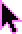

חץ פיקסלי ורוד עם מילוי לילה, ובמעבר על אלמנט לחיץ הוא מתהפך: מילוי ורוד וקו כהה. רק במכשירים עם עכבר. (העבירי את העכבר על הקופסה הזו)
בסושיאל: cursor@8x.svg כ"יד" שמצביעה על כפתור או פרט חשוב.
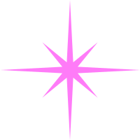
הניצוץ של הלוגו (8 קרניים). מעל ה-i, ככוכב בסושיאל, ליד מילה מודגשת. sparkle.svg
גרסת הקולאז': נייר עם קו ורוד, מוטה 12°. על תמונות ושקופיות. sparkle-sticker.svg
"להצמיד את העיניים למשקפת": שקופית מוארת מאחור בחלל כהה, פינות מעוגלות, vignette, גרעיניות וגוון חם. נפתחת מתגית נייר בכתב יד. נוסטלגיה, לא מסך מלא.
כוכב 12 קודקודים, ורוד מלא, מילה אחת ב-Jersey. ל-NEW, 35MM, מספרים. burst.svg
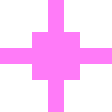
הגרסה הפיקסלית: מפריד ב-marquee, תבליט, eyebrow. pixel-spark.svg
גריד נקודות של 8px. הרקע של כל האתר (7%) ושל מסכי כרטיסים (20%). באתר הוא נדלק סביב העכבר.
קווים כל 3px + vignette, הבהוב עדין מאוד. השכבה העליונה של כל פריים. לא על העבודות עצמן בעמוד פרויקט.
4 פינות של 18px בקו 2px. ממסגרות אזור בלי לסגור אותו. frame-corners.svg
מסגרת 2px, פס כותרת ורוד עם שם קובץ, צל 8px. העטיפה של תמונות, טפסים ועובדות.
ריבוע מהבהב בסוף כותרת. פעם אחת בפריים, רק בכותרת הראשית.
Marker ורוד מלא עם טקסט כהה. מילה אחת או שתיים, לא משפט.
 Shot on film ✦
Shot on film ✦פולארויד, פילם, מדבקות קראפט, צל offset ורוד. לתוכן אישי (צילום, עובדות), לא ל-UI.
קו מקווקו 4/4px. מפריד בין כותרת סקשן לתוכן.
חמשת החפצים מה-hero, עם קו מתאר ורוד חצי שקוף. הם "הדמויות" של המותג: אפשר להשתמש בהם כאייקונים לנושאים (חתול = אישי, pen = עיצוב, לפטופ = UI, קפה = תהליך, מצלמה = צילום).
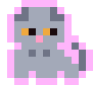
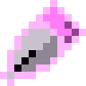
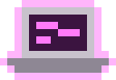
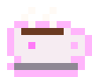
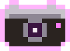
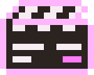
06 / Voice
חם, קליל ובטוח. מדברת כמו מעצבת, לא כמו סוכנות. קריצות של משחקים וממשקים ישנים, אבל המשפט עצמו תמיד ברור.
| מה | כך | ולא כך |
|---|---|---|
| מטאפורות משחק | LVL 01 · collect my things · achievement unlocked | Level up your business synergy |
| שמות קבצים כתוויות | PROJECT_03.FIG · portrait.bmp · slide_02.txt | image_final_v2_NEW.jpg |
| טרמינל, באותיות קטנות | > loading... · // fill in the blanks_ | PLEASE WAIT WHILE LOADING |
| כפתורים: 1–3 מילים | My work → · Download PDF · More about me | Click here to see all of my projects |
| כותרות: קצרות וברורות, בלי משחקי מילים | UX/UI Designer | Pixeling joy into products |
| טקסט רץ: רגוע ובוגר, בלי קלישאות | for the person on the other side of the screen | incredible experiences · delightful · complex problems |
| אישי וכן | Certified movie freak | Passionate creative ninja |
האתר והסושיאל המקצועי באנגלית. פוסטים בעברית מותרים בסושיאל (Heebo), עם אותן תוויות פיקסל באנגלית.
08 / Case study
כל case study הוא המצגת של הפרויקט, מתורגמת לעמוד חי באתר: אותו סדר, אותו תוכן, אבל טקסט אמיתי, טבלאות ותרשימים אמיתיים, ורספונסיבי. המותג (פיקסל, ורוד, LVL) הוא המסגרת; העבודה של הפרויקט (הצבעים, הפונטים והמוקאפים שלו) היא התוכן, ומוצגת נקי.
NN / Label, כותרות Jersey, מספרים בריבוע ורוד, חלונות עם שם קובץ.המפרט הטכני והרכיבים החיים: Design System · 09. תהליך העבודה: הסקיל .claude/skills/case-study. דוגמה: case-myra.html.
09 / Do · Don't
steps()), כמו פריימים של משחק.#FF2CD5.New project · 03

Graphic Design · Poster

UX tip · 01
Small rewards, clear progress and a little surprise turn a task into something people want to finish.
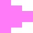
Case studyLVL 01
From research to the last pixel: how I redesigned the first screen.
new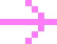
loading...

Hi, I'm Shiran
07 / Social
On the feedתרגום השפה לסושיאל
כל תבנית היא האתר פי 3 (
--u: 3px): מסגרת של 2px באתר היא 6px בפוסט, צל 4px הוא 12px. כך הכל נשאר באותם יחסים. הטקסטים והתמונות ניתנים לעריכה בקובץ הזה, ואז מייצאים PNG בפקודה אחת.Formatsגדלים ואזורים בטוחים
assets/img/og/share.png. לעמוד פרויקט התמונה היא ה-cover שלוTemplatesתבניות
Exportייצוא ל-PNG
עורכים את הטקסט/התמונה בתבנית בקובץ הזה (מחפשים
data-id="post"וכו'), ואז מריצים:הקבצים נשמרים ב-
design-system/exports/. לעבודה ב-Figma או Canva: הצבעים ב-tokens.json, האייקונים והגרפיקות כ-SVG ב-design-system/assets/.Feed rulesכללי הפיד